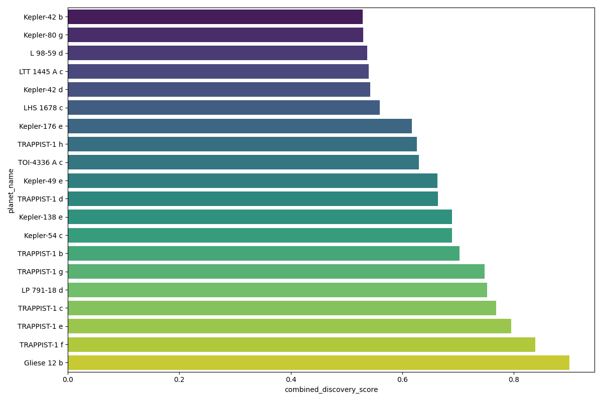
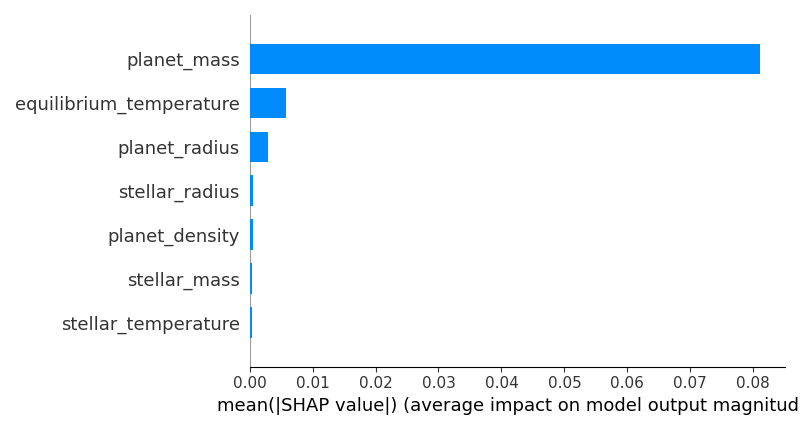
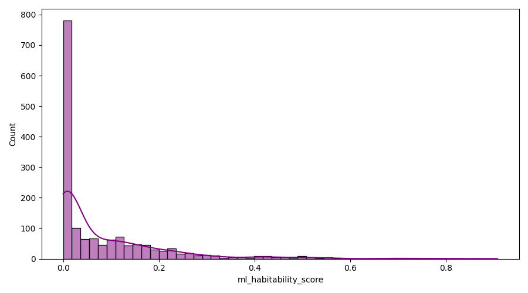

Platform Overview
The ExoIntel platform bridges the gap between raw astronomy and actionable astrobiology. The platform automatically ingests raw observational data from the NASA Exoplanet Archive, applies rigorous feature engineering to derive critical planetary and stellar parameters, and utilizes ensemble machine learning models to predict habitability probabilties.
The system goes beyond simple black-box predictions by ranking candidate planets with a specialized discovery engine, validating the results with SHAP (SHapley Additive exPlanations) explainable AI, and generating scientific insights ready for research publication.
System Architecture
The platform follows a linear, reproducible, automated data pipeline ensuring integrity from raw data to final discovery insights.
NASA Data Ingestion
Retrieving raw planetary & stellar telemetry.
PostgreSQL Data Warehouse
Relational storage and schema validation.
Feature Engineering
Imputation and calculation of key astrophysical metrics.
Machine Learning Models
Gradient Boosting / Random Forest habitability prediction.
Discovery Ranking Engine
Scoring integration with Earth Similarity Index.
Explainable AI (SHAP)
Feature importance mapping to ensure transparency.
User Interfaces
Streamlit dashboard and interactive React frontend.
Discovery Results
The insight generation layer actively parses predictive output to automatically document macro-trends and model explanations.

Top Candidate Rankings

Global Model Feature Importance

Habitability Prediction Distribution
Platform Interfaces
📈 Streamlit Research Dashboard
Built for data scientists and researchers, this interface provides rapid macro-analysis. It connects directly to the PostgreSQL backend to query planetary subsets, visualize generated statistical insights, and act as a testing ground for models before public presentation.
🌐 React Interactive Exploration
A polished, high-performance web interface designed for direct exploration of discovery candidates. It provides detailed, searchable tables and renders interactive SHAP waterfall graphs to help users comprehend exactly why an exoplanet was ranked as habitable.
Documentation & Resources
The ExoIntel platform is entirely open-source and dedicated to scientific reproducibility. Review the following resources for technical details.
Running the Platform Locally
To run the completely automated science pipeline (ingestion, processing, prediction, explainability, and insight generation) ensuring full reproducibility, clone the repository and execute:
python run_exointel_pipeline.py
This command rebuilds the entire backend. Instructions for hosting the frontend servers are available in the repository's documentation.